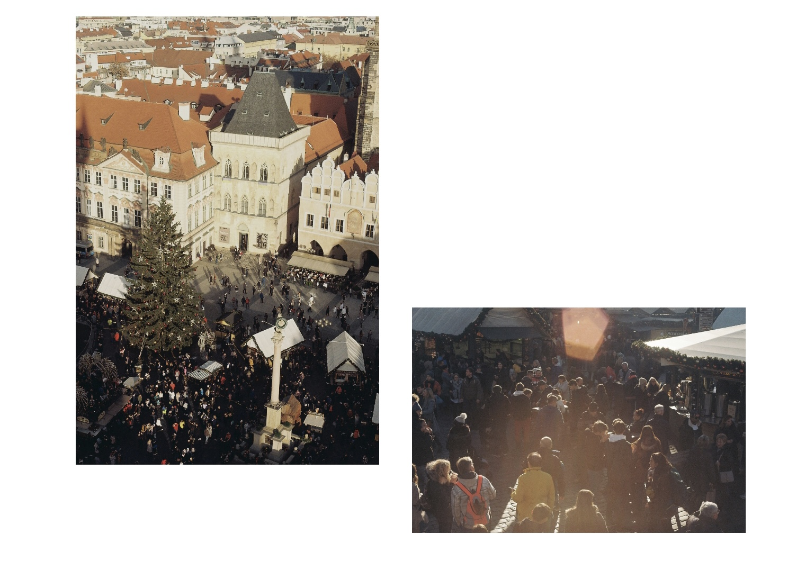
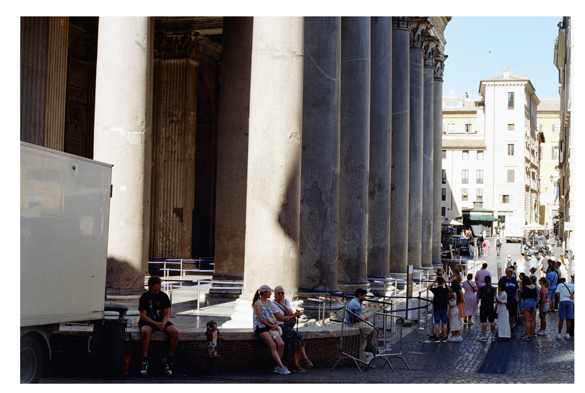
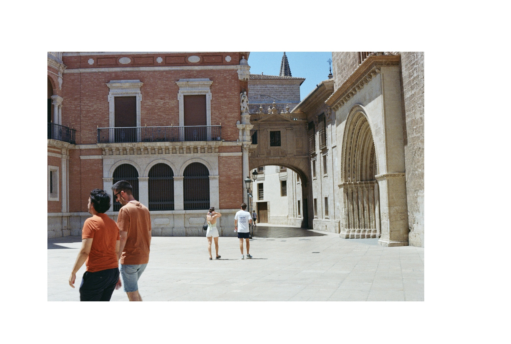

This is my first E-photobook in a Quarto blog. Welcome!
Oxford
Oxford is far more vibrant than I had expected. I imagined it to be a small town, perhaps a university city at most. However, the bustling shops on High Street, the steady stream of tourists, the delayed buses, and the slight disorder in the city centre all made me realise that Oxford is, in fact, a city.

Yet, it remains a small city. I can leisurely stroll to the Thai restaurant I want to visit without needing a map, discover a quiet yet charming alley just a few steps away, and encounter strangers who smile as they pass by. Even the bus driver, who couldn’t stop where I waved because it wasn’t a designated stop, apologised sincerely for making me walk a few extra steps.
On weekday mornings, tourists and locals converge, passing each other in a lively, bustling scene.


Bilbao
Of all the cities I’ve visited, Bilbao has the most beautiful residential buildings. Each building has its own unique window design, yet they all come together harmoniously. In the old town, residents decorate their balconies with flowers, enhancing the architectural beauty without disrupting it.
The Basque region of Spain has a calm atmosphere—there’s no noise or overwhelming enthusiasm, yet it still has the brightness and natural charm typical of Spanish cities. The streets are almost perfectly straight, with no intrusive graffiti to distract you as you walk towards Moyua Square, where you can sit and take in the sounds of the city. On weekdays, the streets are quiet, with only a few people passing by. But at sunset on weekends, people gather in the new town’s public spaces, holding glasses of white wine and enjoying jazz performances by street musicians.


Paris
Paris—a city known for its effortless beauty, elegance, and charm. With the city adorned for the Olympics, Paris and its people once again showcase their artistic brilliance. The ancient City Hall merges with modern sports posters, Renaissance architecture with its meticulously crafted details blends with the bold, subtle touches of new-century Olympic elements. Paris masterfully unites them all, shining with freedom, inclusivity, and diversity.

In this Paris, every day can be wonderfully relaxed:
Stroll along the paths of Montparnasse Cemetery in the morning, Buy a croissant from a cute bakery store, Rest for a moment on a green deck chair in Luxembourg Gardens,

Wander in the Louvre Museum in the afternoon,

Watch the sunset light up Notre-Dame, keeping it radiant, As the lights of the Pompidou Centre begin to glow at twilight, Order an Orange Mecanique at bar and wait for the night to fall.


Venice
To be honest, Venice is a bit worn-down. The buildings have faded, their colours bleeding into each other from years of water exposure and sunlight. Some corners are slightly mouldy, and rust is starting to appear. It’s understandable, given that the city is submerged in water every few years. But this weathered exterior doesn’t hide the underlying beauty of the structures or the spatial forms the city create.
This is especially apparent on the walk to Piazza San Marco after visiting the Biennale. The small, quiet squares without restaurants feel peaceful and harmonious, and the wear on the buildings only enhances their rustic, historical charm. Near the university, students discuss with professors, while a poetry group gathers on the lawn. A woman with a shopping basket exchanges pleasantries with a neighbour, likely complaining about the stifling summer heat. Despite its small size, Venice still holds places untouched by the tourist crowds.
I came for the famed Venice Biennale. This year’s theme, Foreigners Everywhere, seems perfectly suited to Venice—perhaps only Hong Kong could rival it as a fitting host.

Budapest
This world, even if silent, still, and monochrome—I’ve already fallen in love with it.
One early morning, still half-asleep, I went to watch the sunrise with my friend. I remember the sunlight being intense, like a summer noon, casting the Fisherman’s Bastion in a golden glow. Yet everything around was quiet, as it was in fact a winter morning.
Whether by chance or intention, day or night, rain or shine, I always found myself passing by the Parliament Building, the Országház. Architecture, amidst the brief history of regimes or dynasties, always seems so grand—through war and peace, it still stands.

Los Angeles
In early April, I crossed the Atlantic to the West Coast of the United States, looking for the summer. But I was too early—summer was far from awakening.

I can still recall the moment I took off my sunglasses when I arrived the Getty Gallery. The rain had just stopped, the sun was a bit too bright, but puddles still lingered on the ground, and the benches were still damp. It felt as if the gallery wasn’t quite ready to welcome visitors yet—everything was quiet, with a touch of morning drowsiness, and only the gentle sound of flowing water was clear.

Perhaps it was the sunglasses, or maybe the absence of a car, but many of my memories of LA, of California, feel surreal. Except for the Fast-food burger restaurants, the pretty houses like those in Modern Family, and that fleeting moment of dancing on Venice Beach.


Prague
Prague made me realise that social relationships and built environments together shape urban spaces.

In Prague’s old town, cars feel out of place—the streets belong to pedestrians, as does the city itself. At the same time, the space holds memories that transcend time, making the pedestrians feel like they truly belong to the city.

Perhaps Prague has always been this naturally and simply beautiful. But now, in a world where cityscapes are increasingly dominated by LED lights, Prague’s beauty is magnificent and irresistibly captivating.
Rome
Rome, the city of eternal beauty.

I’m reminded of a photography exhibition I saw in Madrid, which said:
“While Las Vegas has become somewhat of an encyclopaedia of the whole world and its history, Rome and Italy hold a special place here as symbols of old-world style and timeless sophistication.”

You can drive past the Roman Forum, visit the Colosseum, and see the ancient graffiti left by spectators on the stands, the forgotten toys, and objects tossed into the sewers. It’s incredible—like travelling through time.
Barcelona
The five days I spent in Barcelona felt like living as a local—comfortable, joyful, and real. I missed Casa Milà and didn’t catch the sunset, but I eavesdropped on an architecture class at the German Pavilion, chatted with a Korean sister at the hostel, got pulled into a bar by a Bosnian and his Spanish friend, and struck up a conversation with someone from Hong Kong at Starbucks, which led to dinner together. The warmth of Spain is unbelievable—like the crowded streets at midnight, with people spilling out of bars and heading to clubs. No one cares where you’re from—if you’re in Barcelona, just enjoy your every minute.
At the bar, one guy said he used to work for Google but now does nothing for a living. Another guy chimed in, saying he also does nothing for a living.

And so, welcome to Barcelona.

Las Vegas
Vegas is truly fragmented. The glitz and glamour of the Strip, the ratty neighbourhoods on the city’s outskirts, the monotony of small towns, and the desolation of the canyons all feel like different worlds. The only thing that might connect them is the casinos.


Turin
The urban planning in Turin revolves around its squares or plazas. The straight roads and cubic buildings just make it easy to create public spaces.

In the mornings, visitors from around the world flock to the grand palaces, museums, and historic sites. By noon, the harsh sunlight drives everyone indoors. In the afternoon, the crowds emerge—hanging out, dancing, and enjoying gelato from nearby shops. The heat persists, but it’s refreshing for the kids splashing in the fountains.

London
The first photo I took in London. Over the next year, I passed Trafalgar Square countless times, often sitting on the steps to the left, sipping a cup of milk tea and watching how this great city operates.

Palma
Palma is beautiful, and despite the countless tourists that flock there each year, it retains a pure kind of beauty. Beyond the blue of the sea, there’s the green of the plants and the earthy tones of the buildings. What more could you need?
It’s a pity that we often take the fewest photos in the cities we know best, or are relatively familiar with.


Eastbourne
A small town on the way to the White Cliffs of Dover. The only main street runs from the train station to the sea. After the rush hour, crowds gather—adults chatting and drinking, children running about, and a DJ playing the music at the street corner. As the sun casts its last rays, people return to their homes and the town seems to fall asleep.

Valencia
Valencia felt a bit wild to me. The lemon on the paella seemed to be peeled by hand, and the squid portions were much larger than in Madrid. The sunlight made everything brighter and fresher, while also making the open spaces hard to linger in.
The modern feel of the City of Arts and Sciences seems to come from the clear water in its pools, which create a boundary around the space, much like a moat. This makes the path to the exhibition halls clear and reveals the order of the space.

However, I didn’t go to the exhibition halls. Instead, I stayed near the water, taking a brief rest on a ceramic bench to escape the intense heat.

